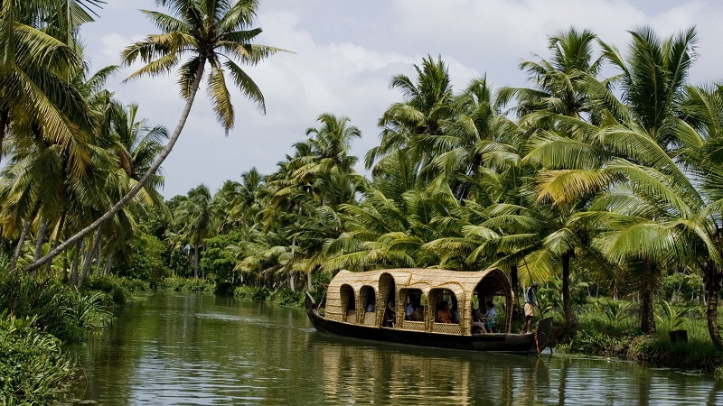

kerala
State of India
Kerala, a state on India's tropical Malabar Coast, has nearly 600km of Arabian Sea shoreline. It's known for its palm-lined beaches and backwaters, a network of canals. Inland are the Western Ghats, mountains whose slopes support tea, coffee and spice plantations as well as wildlife. National parks like Eravikulam and Periyar, plus Wayanad and other sanctuaries, are home to elephants, langur monkeys and tigers.
Land area: 38,863 km²
Capital: Thiruvananthapuram
Governor: Arif Mohammad Khan
Population: 3.46 crores (2018)
Chief minister: Pinarayi Vijayan